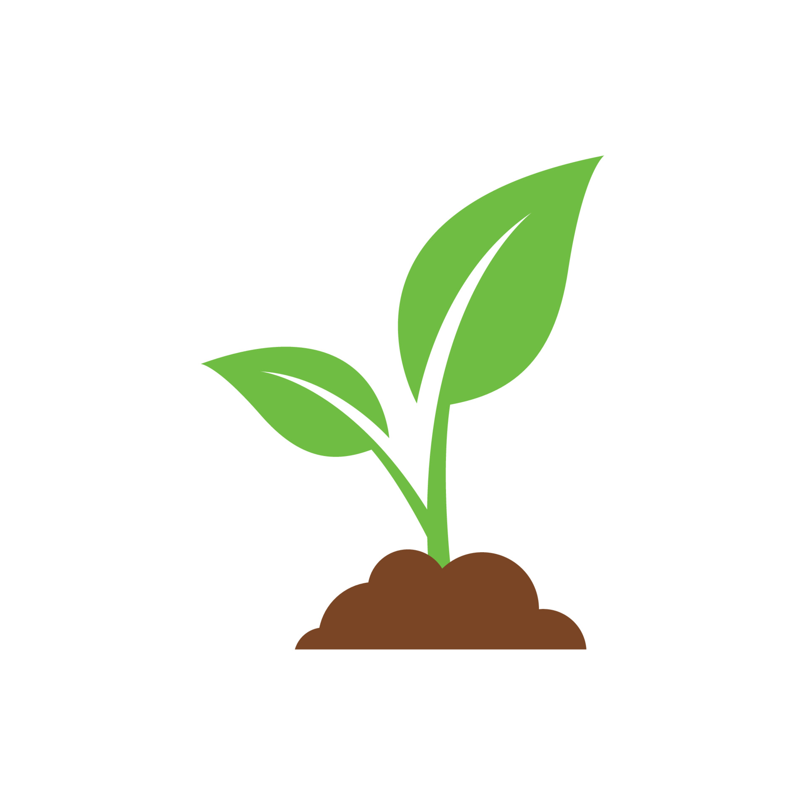

This project aims to raise awareness about sustainable practices and make recycling easier for individuals by providing a simple AI-based tool that encourages proper waste sorting and environmental responsibility.

EcoSort:Assalamua'alaikum!
This is Fabiha Nurjina. I am a high school student who is interested in technology, artificial intelligence, and environmental sustainability. I enjoy exploring how innovative technologies can be used to solve real-world problems and create positive social impact. For this project, I developed an image classification model that can identify biodegradable and recyclable items.